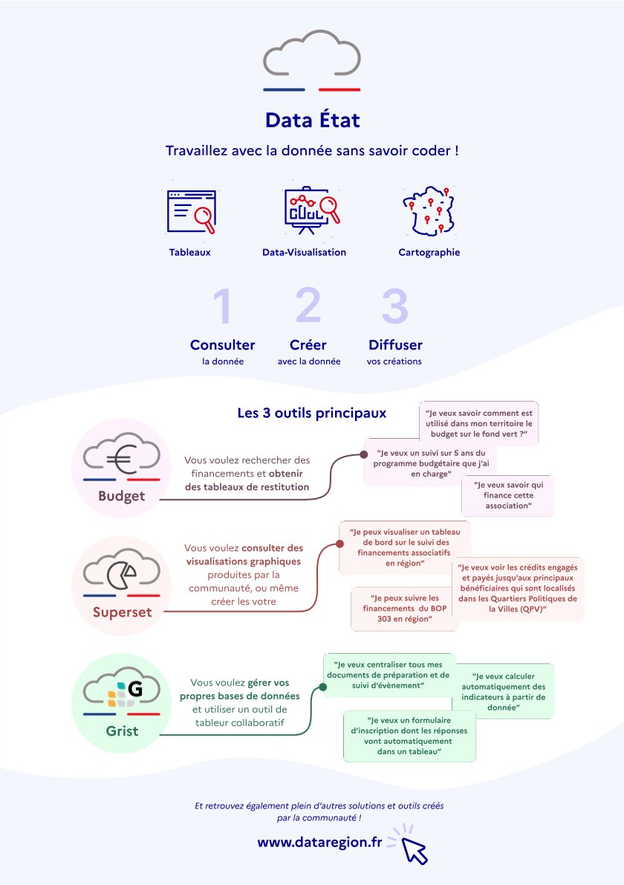
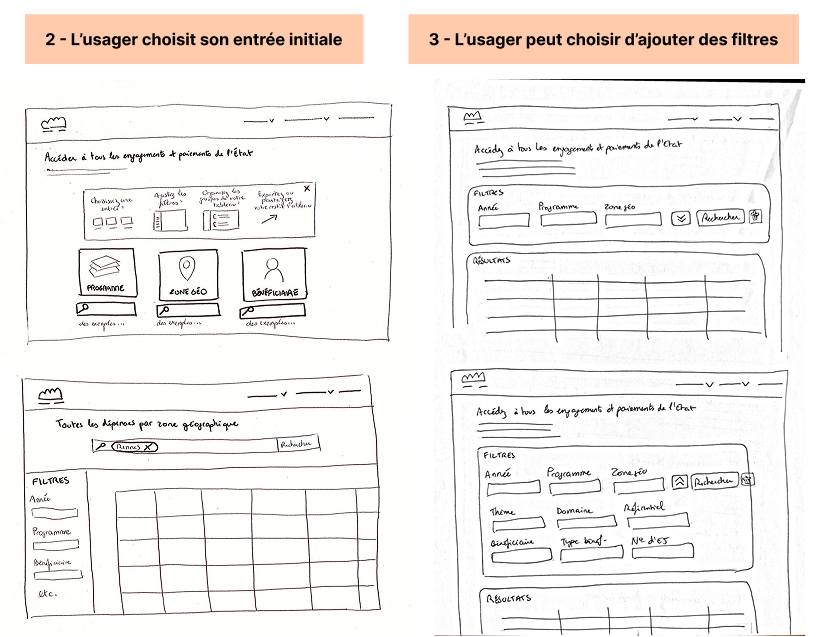
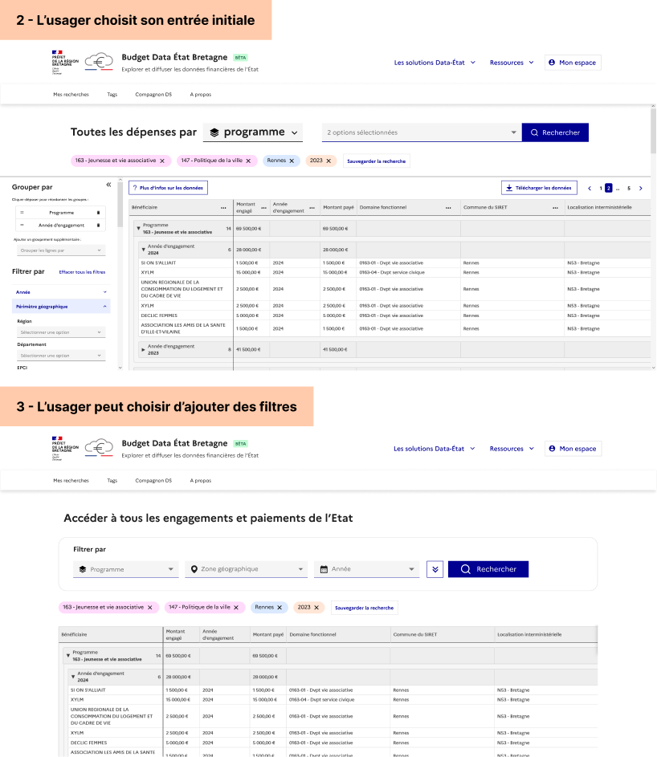
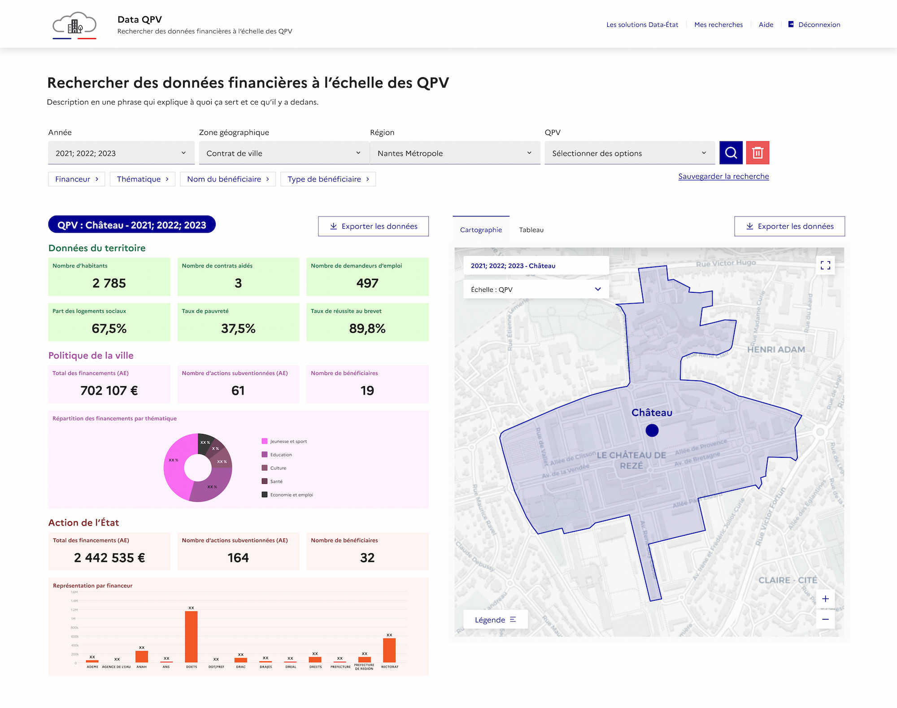
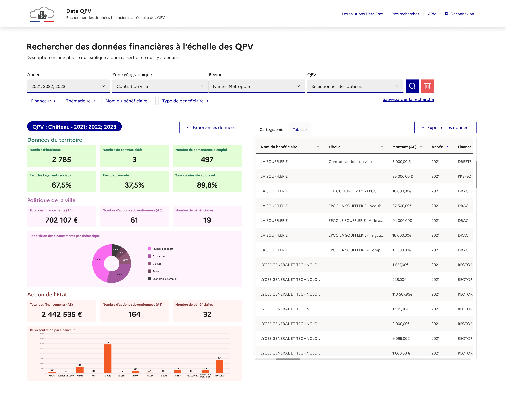
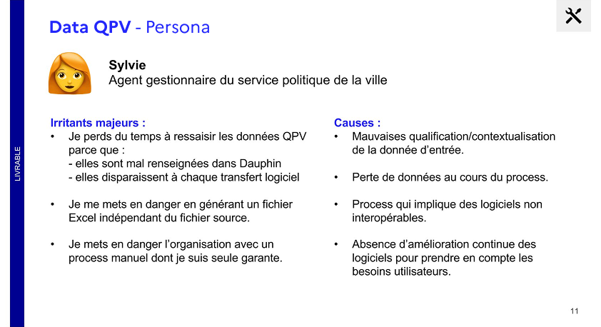
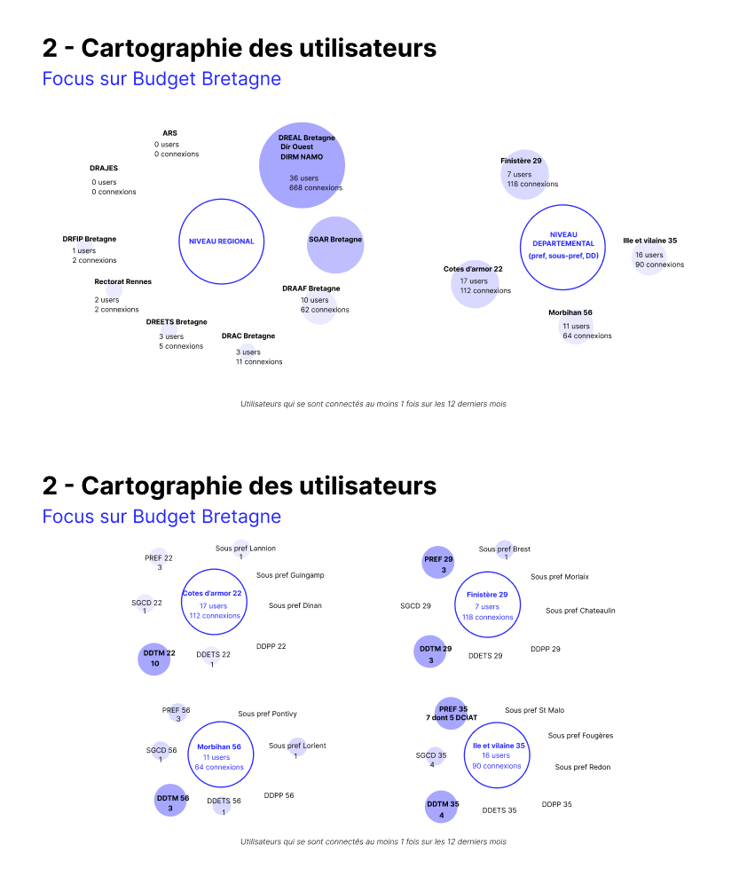

Data-État
UI/UX - Partage de la donnée
Plateforme numérique de partage de données pour les agents de l’État
Data-État est un projet du SGAR Bretagne visant à partager les données comptables de l’État aux agents métiers et leur donner une vision complète des financements publics sur les territoires pour mieux piloter les politiques publiques en toute interministérialité.
C’est une plateforme qui met aussi à disposition plusieurs outils pour faciliter la réutilisation de ces données. Voire même pour aller jusqu’à créer de nouvelles solutions métiers à partir des données.
Mon rôle dans le projet : designer UX/UI de l’équipe projet, allant du recueil de l’expérience utilisateur, au développement du site vitrine, jusqu’aux maquettes d’interfaces des différents produits développés (ex : Data QPV, Budget Bretagne).






